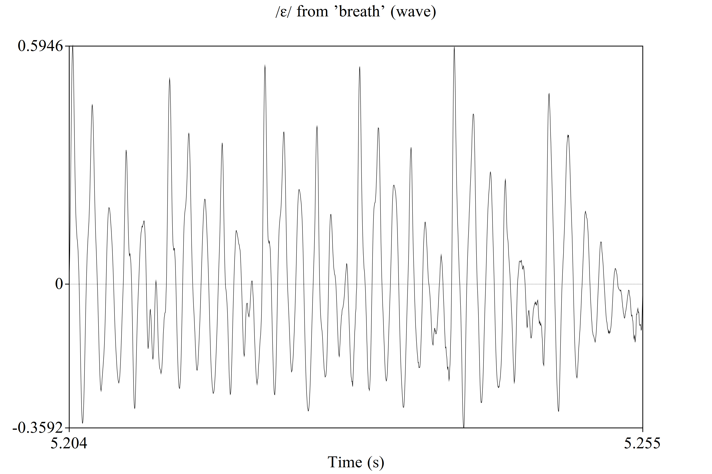
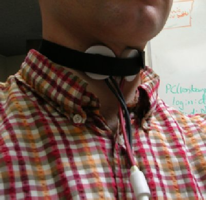

LPC gives us a sense of how the vocal tract is filtering the vocal folds
We estimate the filter’s shape, independent of the voicing (the ‘excitation signal’)
We discussed how LPC can be used to deconstruct and then reconstitute the voice
… but what about estimating the source?
To do LPC synthesis and resynthesis, we need two pieces of information about the source
What is the pitch/fundamental frequency/f0 of the voice?
Where (during the duration of the file) is there voicing to reconstruct?
Are there any irregular pulses?
We can model this, effectively, as a series of numbers indicating f0 over time, with ‘zero’ as an option
… and to find where somebody’s talking at all
So, how’s that happen?
The Cepstral Domain
Mel Frequency Cepstral Coefficients (MFCCs)
Voice Activity Detection
How do we determine the f0 of the voice?
Amplitude varying over time gives us the ‘time domain’
Waveforms view signals in the time domain
Very good for understanding pressure, for playback, and otherwise
“What are the component frequencies and their time courses of this signal?”
Fourier Transform turns a time-domain signal into a frequency domain signal
Very good for seeing frequency components, spectral balance, and resonance
“What are the dominant patterns of periodicity? What rates of change matter most?”
We do a cepstral transformation to see the cepstral domain
Very good for seeing periodicity and patterns of change
First, do fourier analysis to get a spectrum of a signal
Then, log each individual amplitude measure in the power spectrum
Then, do a fourier analysis of the log-transformed fourier analysis!




Excellent when what you care about boils down to a change in rate of change
… and is very important for…
Each frame is put into the frequency domain and scaled to Mels
Then it’s put into the quefrency domain, to emphasize time differences
Then, we reduce the dimensionality using DCT
This is partly due to hearing anatomy
This is partly evolution’s fault too
Hertz captures cycles per second
We’ve already talked about auditory masking
We also percieve jumps in frequency non-linearly
Is the jump in file A the same as in file B?
A.
B.
Is the jump in file A the same as in file B?
A.
B.
Maps numerical pitch measures to human perceptions of changes in pitch
People will tell you that a sound’s pitch is ‘half as high’ at x/2 mels relative to x mels
Mel is the dominant perceptual frequency scale in use

Mel(f) = 1125 * ln(1+f/700)
Mels scale to the frequencies which matter to humans
… and hopefully that helps the computers find the most important elements of speech, too!
Each frame is put into the frequency domain and scaled to Mels
Then it’s put into the quefrency domain, to emphasize time differences
Then, we reduce the dimensionality using DCT

DCT breaks a complex curve into the sum of many cosine functions’ coefficents
“Which frequency of cosine functions would we need, and with what power, in order to describe the shape of this curve?”
“Let’s find the most meaningful N coefficients which describe what’s going on in the cepstrum for each frame”
We get a set of numbers which describe the frame-by-frame cepstral shape of the sound
Usually the first 12-13 coefficients are used in MFCCs
Particularly next week
You should watch Computerphile’s Video on DCT


Many rows (representing time during the signal)
N columns (usually 13) with coefficients which tell us the spectral shape
It’s black-boxy, but we don’t care.
We’ve created a Matrix

In practice, MFCC is not so different from doing Principal Component Analysis on a log spectrum
Both find dominant patterns of variation in the time domain
They’re not exactly equivalent, but the results are very close
This helps with intuition, if you’re used to PCA!
LPC tries explicitly to model only the filter
MFCC models everything, agnostically
… which captures frequency information, according to our perceptual needs
This will be useful for many things, including…
… sadly
One important task before we start modeling speech is detecting whether it’s present or not
This is referred to as ‘Voice Activity Detection’ or VAD
“In this file, for every frame, tell me whether there’s voicing or not”
These work poorly, but cheaply!
Signal Intensity: “Is this signal loud enough to be voice?”
Spectral Slope: “Is there more energy at the lower frequencies than higher frequencies?”
Zero-Crossing Rate: “How often does this signal cross zero?”

0 indicates ‘No speech in this frame’
1 indicates ‘There be speech here’
Some algorithms give you probabilities too
Speech in noise is hard to detect, especially when quiet
Complex approaches may not detect un-trained kinds of speech
Human voices are very variable
Environments vary a lot
Cost is a factor
What amount of speech is clipped away (at the start and middle of speech)?
What amount of noise is called speech at the end of speech?
What amount of noise labeled as speech?
Constraining Analyses: Discard non-speech frames when doing (e.g.) LPC
Removing Silences: In this recording, mark the places somebody’s talking for transcription
Mute-when-not-talking: Don’t transmit the mechanical keyboard clicking please
Call Compression: Don’t send sound data to the other person when no speech is occurring
Telemarketing: Make robocalls, and then put a human on the line only if a human answers
Zero Crossing Rate (with filtering): I expect f0 to be between 80 and 350 Hz, so possible zero crossing rates associated with the fundamental would be between X and Y….
Cepstral Analysis: Look for prominences in the Cepstral domain, where the voicing cycle should give a prominent peak
Harmonic Product Spectra: Take an FFT, then downsample it, and multiply the original by the downsampled version, then repeat


Identify candidate pitches based on autocorrelation spikes for lag
Filter out candidates which fall outside the expected pitch domain (e.g. outside 50 to 400 Hz)
These candidates go on to be post-processed, so we can choose the right candidates!
This is how Praat (and others) do f0 tracking
Silence threshold: How quiet should a frame be before we call it voiceless?
Voicing threshold: How much autocorrelation do you need to consider something voiced?
Octave cost: How much do you want to favor higher-frequency candidates?
Octave-jump cost: How much do you want to avoid sudden octave jumps?
Voiced/unvoiced cost: How much do you want to penalize switching from ‘voiced’ to ‘voiceless’
We don’t tend to suddenly jump way up or down in f0 in one or two cycles
Dynamic Programming approaches work well for this
Phase-based approaches
Very fancy signal processing approaches
Neural Network approaches
Where knowing pitch is crucial (e.g. recording for text-to-speech), other information sources are used
Electroglottography (EGG) gives much more reliable and detailed f0 information

Modeling the voice: LPC requires good information about the excitation signal
Measuring f0: f0 is a great cue for many phenomena in many languages
Identifying musical notes: These same algorithms work great for finding the pitch of musical instruments, too!
Finding pulses: Once you’ve found a fundamental, you can identify pulses too
… and of course….
Voice Activity Detection identifies frames where there’s speech
There are many approaches to VAD, suiting many needs
f0 detection helps us identify the pitch of the voice over many frames
There are many methods, but autocorrelation is unreasonably effective